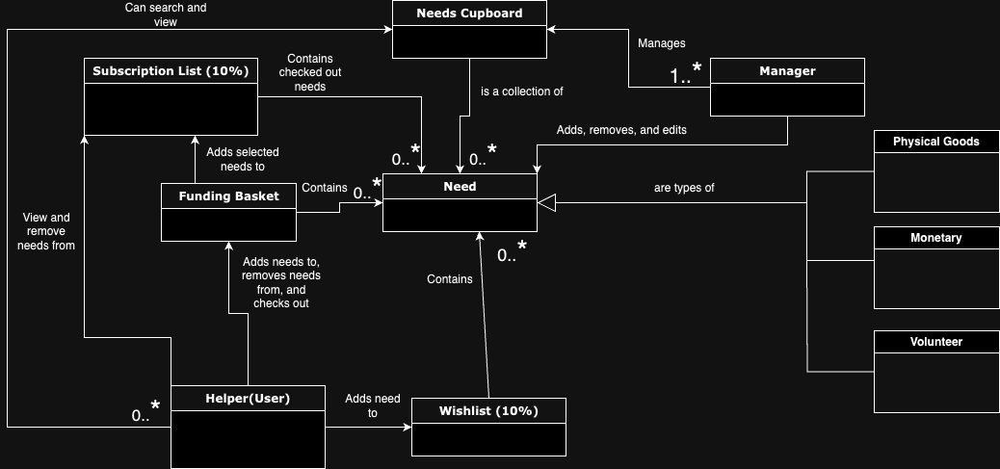
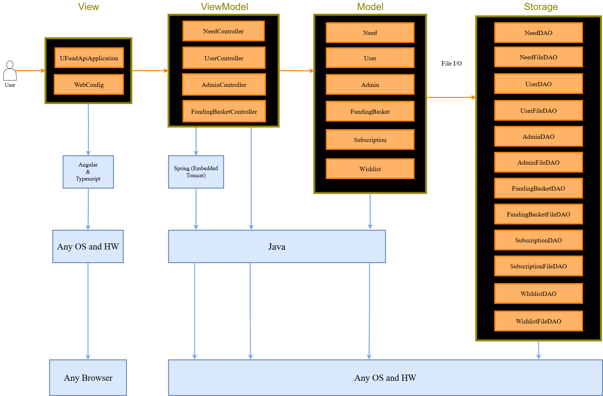

The following template provides the headings for your Design Documentation. As you edit each section make sure you remove these commentary 'blockquotes'; the lines that start with a > character and appear in the generated PDF in italics but do so only after all team members agree that the requirements for that section and current Sprint have been met. Do not delete future Sprint expectations.
This is the save the bees u-fund project. Our project name is "Bee The Change" A Ui and API are created to generate a website for helpers to donate to hep save the bees! Every user will have acess to a funding basket which they can add or remove needs to, and checkout to help save the previously mentioned bees. Admins will be able to edits need cupboards, which hold the needs.
Sprint 2: FOr this sprint
[Sprint 2 & 4] Provide a table of terms and acronyms.
| Term | Definition |
|---|---|
| SPA | Single Page |
This section describes the features of the application.
Search bar: Users should be able to searhc in their funding baskets and the needs cupboard Funding baskets: Each user will have one to hold and eventually check out with needs Need cupboard: Will contain needs that all users can add to their funding baskets Users: Users should be able to log into and out of their accounts, veiwing their funding baskets and the need cupboard. They should also be able to edit their profile Admin: Admin can login wiht the username 'admin' and then edit the needs cupboard
Users can log in and out of application, add and remove needs, and checkout their funding baskets. Admins may edit the need cupboard
[Sprint 4] Provide a list of top-level Epics and/or Stories of the MVP.
[Sprint 4] Describe what enhancements you have implemented for the project.
This section describes the application domain.

Users can add and remove needs to their funding basket. They can also change their profile Admins change need cupboard and needs themselves Needs are contained in the funding basket and needs cupboard
This section describes the application architecture.
The following Tiers/Layers model shows a high-level view of the webapp's architecture. NOTE: detailed diagrams are required in later sections of this document.
[Sprint 1] (Augment this diagram with your own rendition and representations of sample system classes, placing them into the appropriate M/V/VM (orange rectangle) tier section. Focus on what is currently required to support Sprint 1 - Demo requirements. Make sure to describe your design choices in the corresponding Tier Section and also in the OO Design Principles section below.)

The web application, is built using the Model–View–ViewModel (MVVM) architecture pattern.
The Model stores the application data objects including any functionality to provide persistance.
The View is the client-side SPA built with Angular utilizing HTML, CSS and TypeScript. The ViewModel provides RESTful APIs to the client (View) as well as any logic required to manipulate the data objects from the Model.
Both the ViewModel and Model are built using Java and Spring Framework. Details of the components within these tiers are supplied below.
This section describes the web interface flow; this is how the user views and interacts with the web application.
Provide a summary of the application's user interface. Describe, from the user's perspective, the flow of the pages in the web application.
[Sprint 4] Provide a summary of the View Tier UI of your architecture. Describe the types of components in the tier and describe their responsibilities. This should be a narrative description, i.e. it has a flow or "story line" that the reader can follow.
[Sprint 4] You must provide at least 2 sequence diagrams as is relevant to a particular aspects of the design that you are describing. (For example, in a shopping experience application you might create a sequence diagram of a customer searching for an item and adding to their cart.) As these can span multiple tiers, be sure to include an relevant HTTP requests from the client-side to the server-side to help illustrate the end-to-end flow.
[Sprint 4] To adequately show your system, you will need to present the class diagrams where relevant in your design. Some additional tips:
- Class diagrams only apply to the ViewModel and Model Tier
- A single class diagram of the entire system will not be effective. You may start with one, but will be need to break it down into smaller sections to account for requirements of each of the Tier static models below.
- Correct labeling of relationships with proper notation for the relationship type, multiplicities, and navigation information will be important.
- Include other details such as attributes and method signatures that you think are needed to support the level of detail in your discussion.
NeedController - Handles API requests to edit or retrieve needs and responds with HTTP Codes
[Sprint 4] Provide a summary of this tier of your architecture. This section will follow the same instructions that are given for the View Tier above.
At appropriate places as part of this narrative provide one or more updated and properly labeled static models (UML class diagrams) with some details such as associations (connections) between classes, and critical attributes and methods. (Be sure to revisit the Static UML Review Sheet to ensure your class diagrams are using correct format and syntax.)
Need - Maps attributes of need to json properties and provides methods to retrieve and change need attributes
[Sprint 2, 3 & 4] Provide a summary of this tier of your architecture. This section will follow the same instructions that are given for the View Tier above.
At appropriate places as part of this narrative provide one or more updated and properly labeled static models (UML class diagrams) with some details such as associations (connections) between classes, and critical attributes and methods. (Be sure to revisit the Static UML Review Sheet to ensure your class diagrams are using correct format and syntax.)

[Sprint 1] Name and describe the initial OO Principles that your team has considered in support of your design (and implementation) for this first Sprint. Open/Closed BMD is incorporating the Open/Closed principle in our design by planning for all classes to be extendable, but not extensively changed in their functionality. For example, the needFileDAO class implements the NeedDAO class, and the NeedDAO class is used via other functions so that NeedFileDAO has some private and untouchable characteristics. We could still improve in this area by making some sort of extendable basket, so that wishlist and afunding basket could both polymorph from it in order to keep more efficient code.
.PNG)

Single Responsibility
BMD is incorporating the Single Responsibility principle in our design by having each class be focused in its use. For example, the NeedController class’s purpose is to handle API requests and respond with HTTP Codes. It does not manage Need data and its storage. Instead, this job is outsourced to the NeedFileDAO class. Our usage of the single responsible principle could be further improved by consistent checking whenever a class is created that it only has one responsibility and by using the same framework with Basket and Cupboard as with Need.
.PNG)
.PNG)
.PNG)
Dependency Inversion/Injections
This principle will be designed in our design in a variety of ways. We will design our system to follow the Dependency Inversion principle by ensuring that high-level modules do not depend on low-level modules. Instead, both will depend on abstractions. Here is a list of all examples of this from our current project:
For example, funding Baskets will be created separately from the user. I.E, the user will not be the one to instantiate or create a new funding baskets when they want to, that will be the job of the application to create one then inject the funding basket into the user’s current list of funding baskets
To further improve adherence to Dependency Inversion, we could ensure that all dependencies are handled through interfaces or abstract classes rather than concrete implementations. This would allow us to easily swap out implementations in the future without impacting the high-level code

Law of Demeter
This principle will be implemented by BMD in a variety of ways. The obvious cases we have endevoured upon so far have been in regards to our backend chaining of fundciotions via dot notation. For instance, funding basket will call a give user then through that user add a need, and not simply add a need directly to the users funding basket. out code isnt perfect, adn we still have areas we could improve, and we could further enhance out LoD by making our controllers specifically more independant and only talk to their "neighbors"


[Sprint 2, 3 & 4] Will eventually address upto 4 key OO Principles in your final design. Follow guidance in augmenting those completed in previous Sprints as indicated to you by instructor. Be sure to include any diagrams (or clearly refer to ones elsewhere in your Tier sections above) to support your claims.
[Sprint 3 & 4] OO Design Principles should span across all tiers.
[Sprint 4] With the results from the Static Code Analysis exercise, Identify 3-4 areas within your code that have been flagged by the Static Code Analysis Tool (SonarQube) and provide your analysis and recommendations.
Include any relevant screenshot(s) with each area.
[Sprint 4] Discuss future refactoring and other design improvements your team would explore if the team had additional time.


All 9 tests for all 9 current main backend classes have passed their acceptance criteria and edge cases
[Sprint 4] Discuss your unit testing strategy. Report on the code coverage achieved from unit testing of the code base. Discuss the team's coverage targets, why you selected those values, and how well your code coverage met your targets.
[Sprint 2, 3 & 4] Include images of your code coverage report. If there are any anomalies, discuss those.
[Sprint 1, 2, 3 & 4] Throughout the project, provide a time stamp (yyyy/mm/dd): Sprint # and description of any mayor team decisions or design milestones/changes and corresponding justification.
Backend will be handled by: Jack and Oumar Front end will be by: Francis, Andy, and Ben (2024/10/1): Sprint 2 Frontend will be themed around spring colors. (2024/10/19): Sprint 2 Only one admin user will exist and will he hardcoded into the users.json. (2024/10/19): Sprint 2 Needs will be displayed through an active search feature rather than a static get.